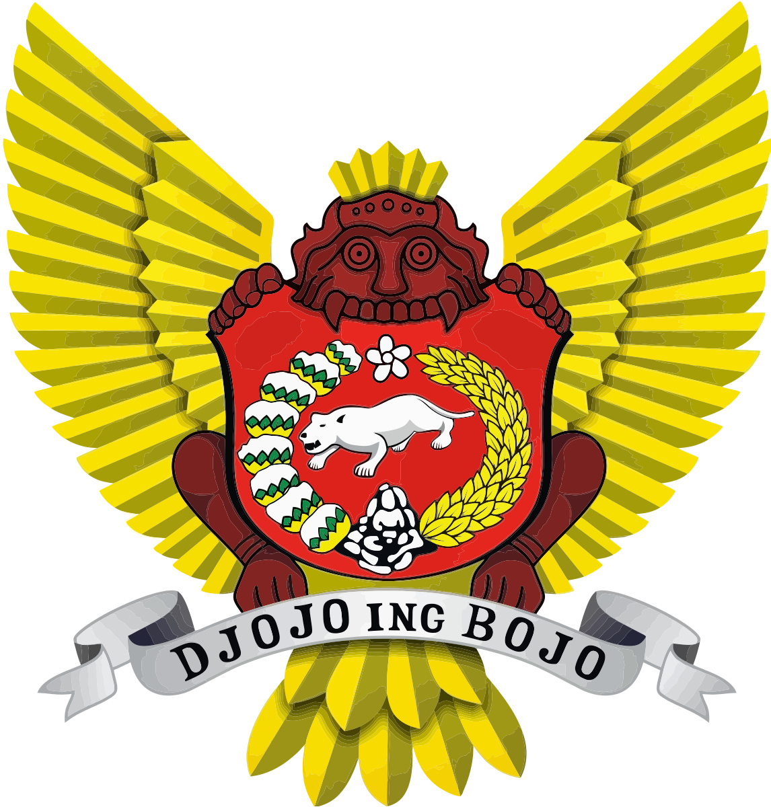

Kota Kediri
Provinsi Jawa Timur
Kota Kediri adalah sebuah kota yang berada di Provinsi Jawa Timur, Indonesia. Kota ini terletak sekitar 130 km sebelah Barat Daya Kota Surabaya dan merupakan kota terbesar ketiga di provinsi Jawa Timur setelah Kota Surabaya dan Kota Malang menurut jumlah penduduk. Kota Kediri merupakan kota tertua yang ada di Jawa Timur. Kota Kediri memiliki luas wilayah 63,40 km² . dan seluruh wilayahnya merupakan enklave dari Kabupaten Kediri.
Kota Kediri terbelah oleh Sungai Brantas yang membujur dari Selatan ke Utara sepanjang 7 kilometer. Penduduk kota ini berjumlah 289.418 jiwa, berdasarkan data Badan Pusat Statistik Kota Kediri tahun 2023.Kediri dikenal merupakan salah satu pusat produksi gula dan industri rokok terbesar di Indonesia. Perusahaan rokok Gudang Garam berpusat di kota ini.
| No | Jenis Kelamin | Jumlah |
|---|---|---|
| 1 | Laki-laki | 147.990 Jiwa |
| 2 | Perempuan | 147.240 Jiwa |
| 3 | Total | 295.230 Jiwa |
Kecamatan
- Kota
- Mojoroto
- Pesantren
- Kediri
- Pare
- Ngasem
- Gampengrejo
Website Pemkot Kediri
